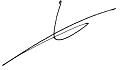

PERFIL PERSONAL
Me presento como una persona activa, responsable, creativa, flexible, orientada al logro de resultados y a la resolución y evolución constante en las tareas asignadas.
CUALIDADES
- Paciencia
- Adaptabilidad
- Pensamiento lógico
- Liderazgo y trabajo en equipo
- Proactividad
- Responsabilidad
- Iniciativa
- Capacidad para manejar conflictos
DATOS PERSONALES
- Estado civil:
- Soltero
- Carnet de conducir:
- B1
- Hobbies:
- Rugby
- Programación
- Videojuegos
- Series
- Idiomas:
- Inglés intermedio
- Lenguajes:
- JavaScript
- Python
- HTML / CSS
Estimados/as Sres/as.:
Estoy en un momento de cambio laboral, con una buena trayectoria profesional y una sólida formación.
Deseo encontrar un nuevo proyecto que me permita crecer tanto personal como profesionalmente.
Mi experiencia se centra en el área de ventas y post venta como observarán en el currículum vitae que les adjunto, mi perfil profesional, tanto por experiencia como por la formación adquirida al respecto, se podría ajustar a las necesidades actuales o futuras de su empresa.
Dada la profesionalidad de su empresa, cuya línea me resulta muy interesante, les ruego consideren, a la vista del currículum vitae que les adjunto, la posibilidad de una colaboración profesional.
En caso de que lo consideren oportuno, les agradecería mantuviésemos una entrevista para poder ampliar los datos que aparecen en el currículum vitae, así como todo aquello que consideren de su interés.
Quedando a la espera de sus noticias, me despido atentamente
Ramos Silveyra Manuel